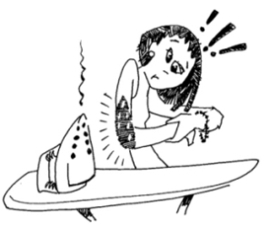

This page has usage examples for the following words:
aloe sap アロエ汁 アロエじる
apply running tap water 水道水をかける すいどうすいをかける
blister 水ぶくれ みずぶくれ
burn 火傷 やけど
dermatology 皮膚科 ひふか
first aid 応急手当 おうきゅうてあて
keloid, scar ケロイド
skin graft 植皮 しょくひ
Skin gets sore, skin peels off 皮膚がただれる、むける ひふがただれる、むける

I burned my arm with a hot iron.
腕が熱いアイロンにふれて、火傷をしました。
うでが あついアイロンに ふれて、やけどをしました。
I didn't give myself any first aid and now there is a brown blister and pain.
その時に何も手当をしなかったら、次第に皮膚がヒリヒリして、茶色い水膨れになってきました。
そのときに なにもてあてをしなかったら、しだいにひふがヒリヒリして、ちゃいろい みずぶくれになってきました。
I grabbed a hot dish right out of the oven and burned my fingers.
オーブンから出したばかりの料理の器を掴んで、指を火傷しました。
オーブンから だしたばかりの りょうりのうつわをつかんで、ゆびをやけどしました。
They are now red and swollen.
赤く腫れ上がっています。
あかくはれあがっています。
Yesterday, hot oil from a frying pan splattered onto my daughter's face.
昨日、フライパンの油が、この子の顔に飛びはねました。
きのう、フライパンのあぶらが、このこのかおに とびはねました。
I immediately applied cold water and then sap from my aloe plant.
すぐに、冷水を当て、それからアロエ汁をつけました。
すぐに、れいすいをあて、それから アロエじるをつけました。
My daughter's face has red spots. I'm worried that they will form scars.
皮膚が赤くなっていますが、大きくなってからケロイドが残らないか心配です。
ひふが あかくなっていますが、おおきくなってから ケロイドがのこらないかしんぱいです。
Will they disappear?
きれいに治りますか。
きれいになおりますか。
My face was burned in an accident when I was small.
小さい頃、ある事故で顔にやけどをおいました。
ちいさいころ、あるじこで かおに やけどをおいました。
At that time, the skin on my left cheek became sore and peeled off.
その時、左のほおの一部がただれて、皮膚がむけました。
そのとき、ひだりのほおのいちぶが ただれて、ひふがむけました。
A conversation between a patient and a doctor about the burn
Patient:
I was cooking with hot oil in the kitchen. My 5-year-old daughter came toward me. It was too late to stop her when she started crying. Hot oil from a frying pan splattered onto my daughter’s face.
台所で油を使って料理をしている所へ、５歳の娘が近づいて来ました。驚いた瞬間には時遅く、フライパンの油が娘の顔に数滴とびはねて泣き叫びだしたのです。
Doctor:
Burns are commonly classified into 3 degrees according to severity of injuries (depth and size). The first degree burns are the lightest. Injuries are limited to the skin surface. The skin is red with minor pain to touch. The second degree burns produces blisters but the skin is cured without scars. The third degree burns are the severest. The whole layers of the skin are injured, resulting in scarring which requires skin graft. When burns extend over 2/3 of the body surface, it is extremely dangerous and needs to be treated at burn hospitals.
火傷は、皮膚の障害の程度、深度とサイズによって、３段階に分けられます。１度の火傷は、一番軽く、皮膚の表面に限定されている場合で、皮膚が赤くなり、触ると痛みを感じる程度のもの。２度の火傷は、水ぶくれが出来ますが、殆どの場合、痕を残さずに治癒します。３度の火傷は最もひどく、皮膚が全層にわたって障害を受け、いわゆるケロイドを残します。植皮を必要とするのはこの火傷の場合です。身体全体の皮膚の2/3以上に火傷をした場合は非常に重傷で、専門病院での治療が必要です。
In cases such as burns caused by drops of hot oil, the burned area should be cooled immediately with running cold water. For burns on arms and legs, they can be placed in a bucket filled with cold water. In other words, cooling of the affected areas is important. It should be for at least 10 minutes, but needs not to be in ice water. Applying aloe sap is also effective for minor burns.
おっしゃった例のように、軽く油が飛んで来たというような時は、すぐに冷水で皮膚を冷たくする、腕や足の場合は、バケツなどに水を溜めて突っ込んで冷たくすることが出来ます。要するに火傷の部分を冷やすことが必要です。１０分間は続けて下さい。これは痛みを軽くすることも助けます。氷水である必要はありません。軽い火傷には、また、アロエ汁をとんとんと塗り続けても効果があります。
一言おせっかい My two cents
Regular cold water (or running tap water) is said to be more effective than ice water. Cooling is important even 10 to 15 minutes after suffering from burns. When the burned area is large, towels or sheets soaked with cold water can be spread over the burns.
氷水よりも普通の冷水（水道水でも）の方が、より効果があると言われています。火傷してから１０分～１５分後でも冷やすことが大切です。広い部分の場合は、大きなタオルやシーツを水にしたして全体にあてるようにして下さい。
[ya01]
| © 1995-2013 NACOS International Institute. All Rights Reserved. |